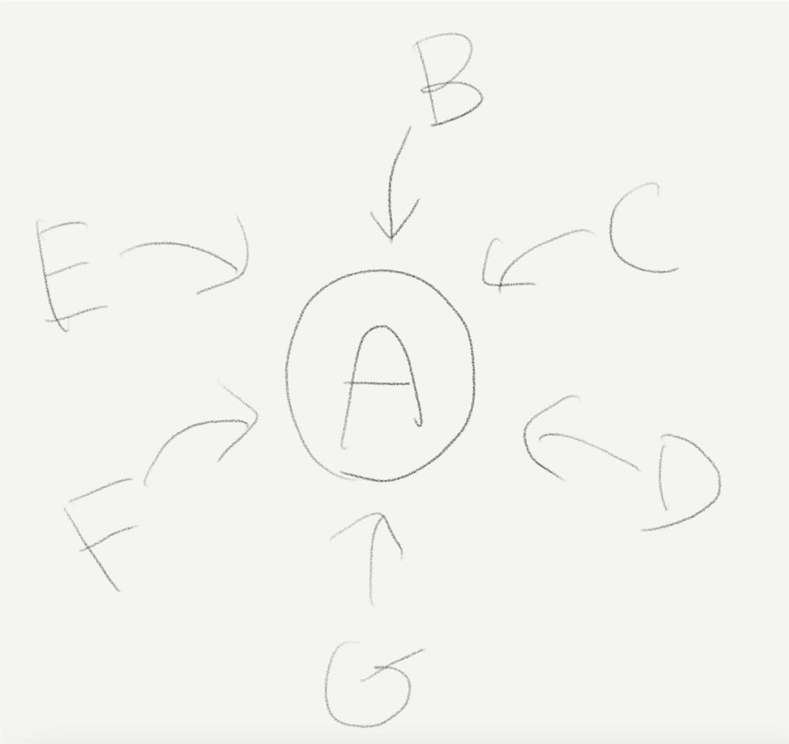

マインドフルネスや禅を深く理解したいと思い、仏教の用語を理解しようとするなかで、個人的に一番理解しがたかったのが、「一切皆苦」。
以前の記事で書いたときは、今ひとつ納得感がなかったのだけれど、自分で何回か意味を反芻するうちに、自然と腹落ちしたように思うので記録しておく。
ただ、自分は人それぞれに考えや哲学があって良いと考えているので、以下は一つの捉え方だと前置きしておきたい。
まず、何かと何かをイコールで結ぶことについて考えてみたい。
AはBだ、というとき、例えば「葉っぱが青い」というとき、AとBの関係は果たしてどうなっているだろうか。
当然ながら文脈に応じてさまざまな関係性があるのだけれど、Aが完全にBに一致する、ということはない。
AがBだと思うとき、それは何らかの一面である、そういう性質を持つ、など、仮にA=Bだと感じられる、に過ぎないのではないだろうか。
「地球は青い」「学校は楽しい」「あの男の子はかっこいい」「図書館は静かだ」「ゲームは娯楽だ」
……例をたくさん挙げてみると良いと思うのだけれど、実は、A=Bと言いながらもAとBは別物なのである。
この矛盾はなぜ起こるかといえば、BはAの性質や見方の一部でしか過ぎない、ということと、何かと何かを結びつけて考えること自体、頭の中で結びつけているだけに過ぎないのである。
つまり何が言いたいかというと、例えばA=B、A=C、A=D… のようなことも平気でありえる。

つまり一つの概念は多面的で、複数の性質を同時に持ち合わせていて、もはや一つだと思っていること自体何かが複合的に重なり合っているのである。
この物事の捉え方は仏教の概念の中ではよくみられるもので、自分は量子的な重ね合わせに限りなく近い、モノの見方だと思っている。
例えば、無我の境地というのも、自我と真我というのも、この考え方をベースにすると自然と腑に落ちる。
自分だと思っていたものは、自分と断定できるような一つのものではないとふと気づくし、逆に、他人と自分の境目や、内と外というのは非常に曖昧である。
だからこそ、物事を何だと断定するのは難しく、ありのままをそのまま捉えるのが大事だと、説かれているのだと考える。
では、一切皆苦をこの見方をもとに捉え直してみよう。
全てのことは苦しみであるというのは、物事の一つの見方に過ぎない。
というかもはや、苦しみも悲しみも楽しさも喜びも、重ね合わせられているのである。
例えば、何かを楽しいと感じるとき、同時に辛さも感じる。そして同時に、苦しかったり辛かったりすることこそ楽しい、というのは、実は多くの人が実感するのではないだろうか。
友達と楽しい旅行に行ったとき、実はどっと疲れるというのは誰もが実感する事実だと思う。あるいは部活で辛い思いをして、何度ももう辞めてやると思いながら格闘した思い出こそ、実は最高に楽しかった、なんてこともある。ショッキングで悲しい出来事こそ、後から振り返れば複雑な感情が入り混じっていた、ってこともあるのではないだろうか。
つまり自分の考える、一切皆苦が言いたかったことというのは、全ての物事は辛いし苦しいし悲しいし、それでいて同時に楽しくて嬉しくて最高なのだ、ということだと思う。
苦しみを通じて、楽しみを得る。苦しみを避けることは楽しみを避けることになる。一つの物事はたくさんのことを同時に表現・内包していて、常に動いて変化しているかと思えば変わらないものもある。
言語で何かを表現することは難しいのだけれど、これがすなわち一切皆苦、ひいては色即是空 空即是色という考え方に繋がるのではないだろうか。
人間というのはつい、何かを何かだと断定して、A = BだA = Bだと思っているうちに、なんだか自然とすり替わって、AはBと同じなのだと思ってしまうことがあると思う。
それは決して悪いことではないし自然な行いなのだけれど、ラベリングや分類というのは、実は事実を誤認してしまうということもあるのだと、量子的な重ね合わせを考えていると感じたりもする。
もちろん、自分はこの世界について誰がどんな見方をしようと自由だと思う。それだけの懐の深さが世界にはあるし、自由度の高さこそ面白さであるし、思索や冒険の楽しみであると思うし、何かにラベリングして整理することも、それ自体楽しいことだと思う。
それでもふと何かしらの瞬間に、ある物事をただそのままに、ただありのままに捉えることは大事ではないだろうか。
何かのレッテルやフィルターを抜きにして、ありのままに捉えてみることで、ある事象の持つ多面性や多様性というものに気づいて、一つだと思っていたことが多数であったり、同じだと思っていたことが別であったり、全く違うものだと思っていたものが似たものであったりということに気づく。そうした気づきを蓄積することは、この上なく愉しい。
自分自身が一切皆苦がよくわからないと思っているのと同じように、この世にはまだまだたくさんのわからないことがある。だからこそ世の中は面白いし、奥が深い。わかったようでわからない、わからないようで実はわかっている、そうした複数の状態は常に重ね合わせられていて、同時に存在するのである。
物事をありのままに捉えることは、そうした新しい気づきを常に与えてくれて、身の回りにある当たり前だと思うことに何度も出会って何度も考え直す機会を与えてくれる。
それが、ありのままに物事を捉えて、気付きを得ることの、愉しさではないだろうか。